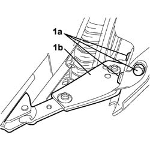

7020C24 Lower support and sliding DEVICE for one sliding side door, left or right - R.R.
- Path
- Procedures > 70 FITTINGS > 7020 LOAD CARRYING COMPARTMENT DOORS > 7020C sliding side door > 7020C24 Lower support and sliding DEVICE for one sliding side door, left or right - R.R.
- Kind
- repair procedure (removal / refitting; the operation number is the code)
- Applies to
- engines: 1.4 8v, 1.6 16v, 1.3 JTD 16V, 1.9 JTD 8V; all production periods
- Interactive page
- https://sloeber94.github.io/elrnDB-fDbl/en/#/2585055
Applies to: engines: 1.4 8v, 1.6 16v, 1.3 JTD 16V, 1.9 JTD 8V; all production periods; only with equipment: 7 seater
 Removing
Removing
 Refitting
RefittingCarry out
Op. 7020C12 SLIDING SIDE DOOR END OF TRAVEL STOP LEFT OR RIGHT - R.R..
Carry out
Op. 7020D50 DEVICE FOR KEEPING SLIDING DOOR OPEN - R+R.
Position a suitable prop beneath the sliding door, open to the end of its travel.
1. Undo the retaining bolts to the sliding side door (1a) and remove lower sliding device (1b) by withdrawing from the lower guide.

Applies to: engines: 1.4 8v, 1.6 16v, 1.3 JTD 16V, 1.9 JTD 8V; all production periods; only with equipment: 7 seater
Refitting
RemovingInsert the lower sliding device into the seat on the lower guide and secure to the sliding side door with bolts.
Remove the prop from under the door.
Carry out
Op. 7020D50 DEVICE FOR KEEPING SLIDING DOOR OPEN - R+R.
Carry out
Op. 7020C12 SLIDING SIDE DOOR END OF TRAVEL STOP LEFT OR RIGHT - R.R..
Topics linked from this page (2)
- 7020C12 Sliding side door end of travel CLIP, left or right - R.R.
- 7020D50 device for holding sliding door open - r+r